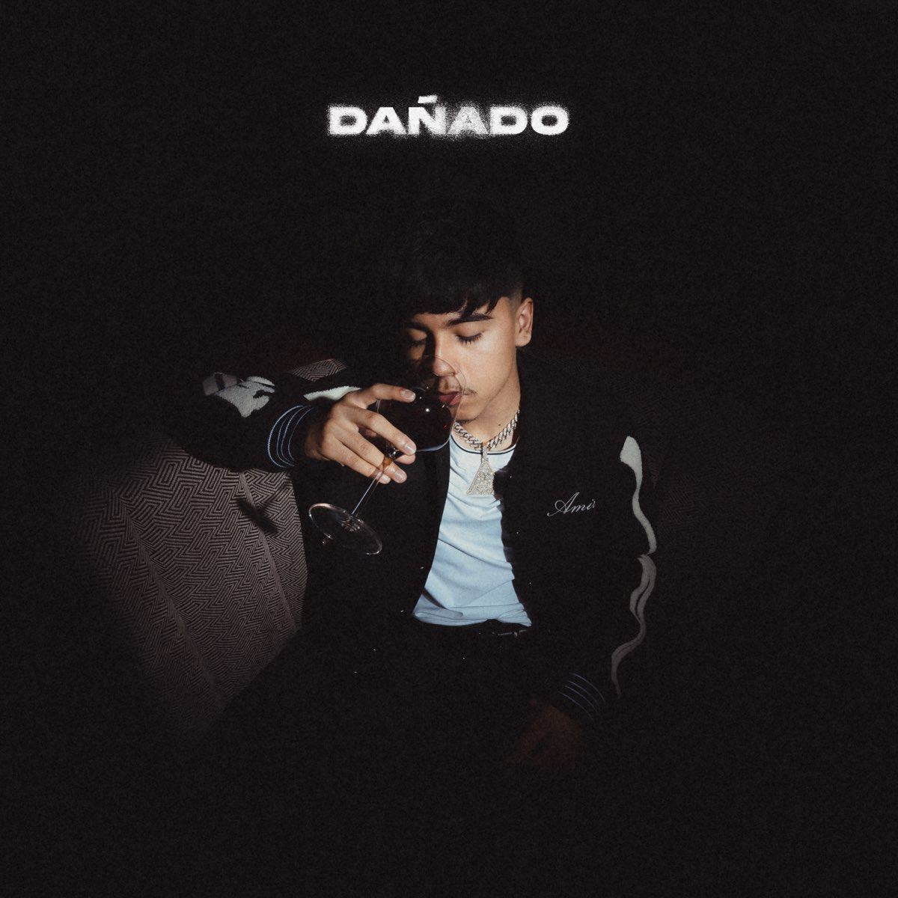
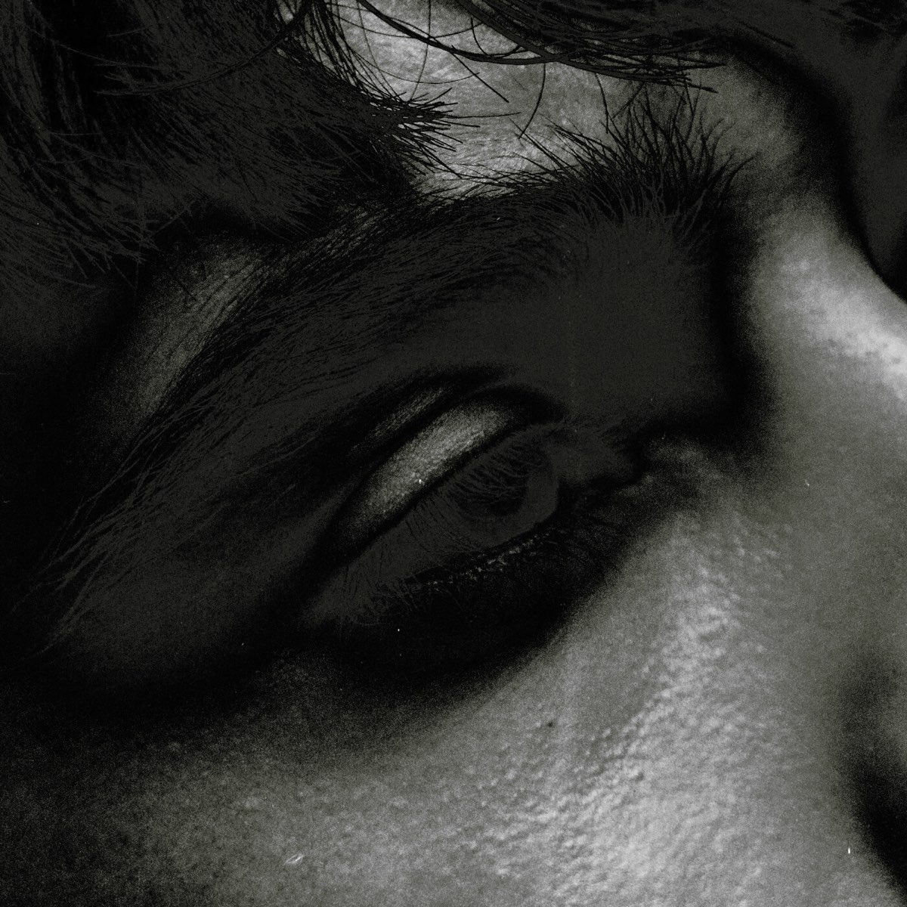

Mi Galeria
Iván Cornejo lanzó su álbum "Mirada" el 18 de julio de 2024. Este álbum es su tercer trabajo y ha sido bien recibido, debutando en el primer lugar en las listas de álbumes regionales mexicanos y en la lista Billboard 200.
"MIRADA"
— 2024 | Iván Cornejo
Ivan Cornejo lanzó su álbum "Dañado" el 2 de diciembre de 2022. Este álbum es su segundo trabajo y ha recibido varios premios, incluyendo el premio a Álbum Regional Mexicano del Año en los Premios Billboard de la Música Latina.

"DAÑADO"
— 2022 | Iván Cornejo
"Baby Please" es una canción del cantautor estadounidense Iván Cornejo, lanzada el 14 de marzo de 2024 como el tercer sencillo de su tercer álbum de estudio Mirada (2024). Fue producido por Frank Rio.

"BABY PLEASE"
— 2024 | Iván Cornejo
El álbum "Me Prometí" de Ivan Cornejo fue lanzado el 1 de mayo de 2025. Esta canción ha sido bien recibida y ha alcanzado posiciones en listas de Billboard.
"ME PROMETI"
— 2025 | Iván Cornejo
Ivan Cornejo lanzó su álbum "Alma Vacía" el 20 de agosto de 2021.
"ALMA VACIA"
— 2021 | Iván Cornejo